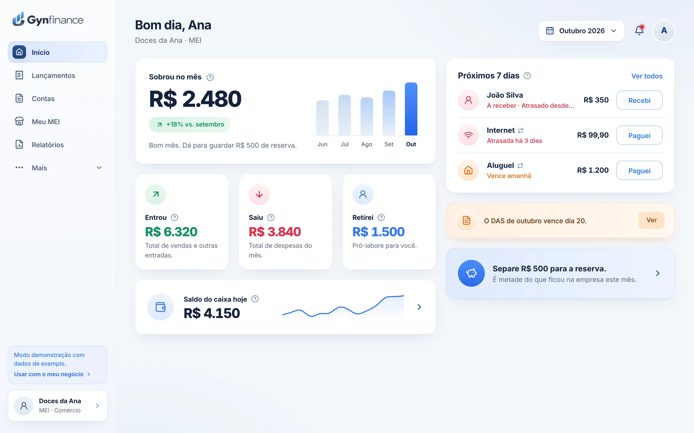
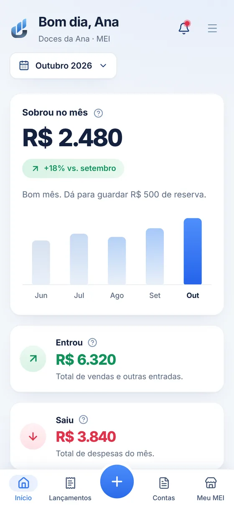
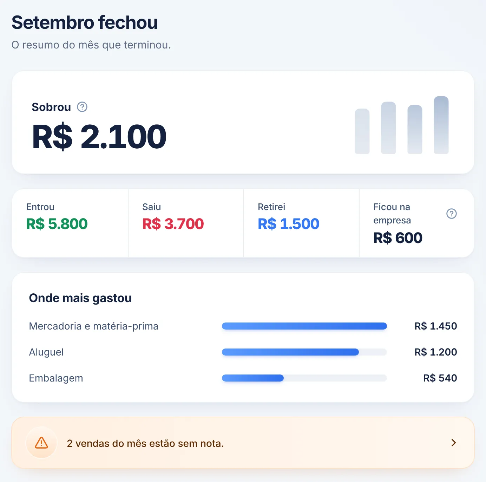
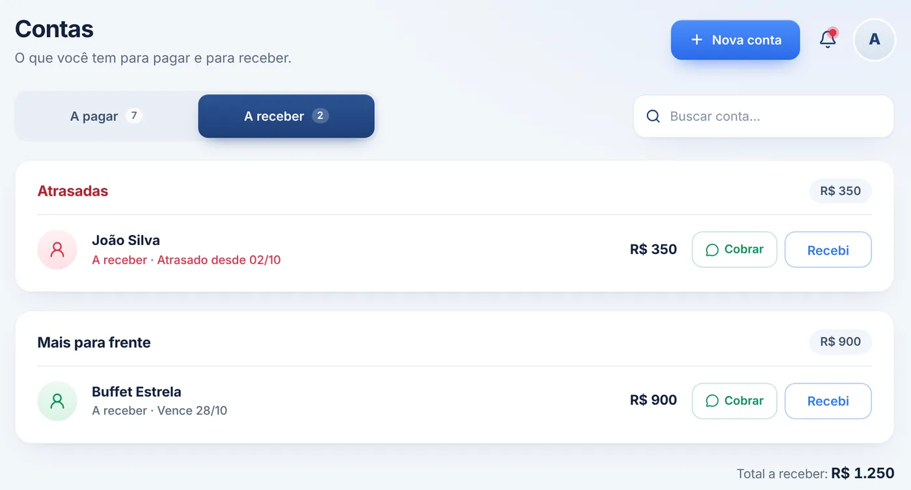
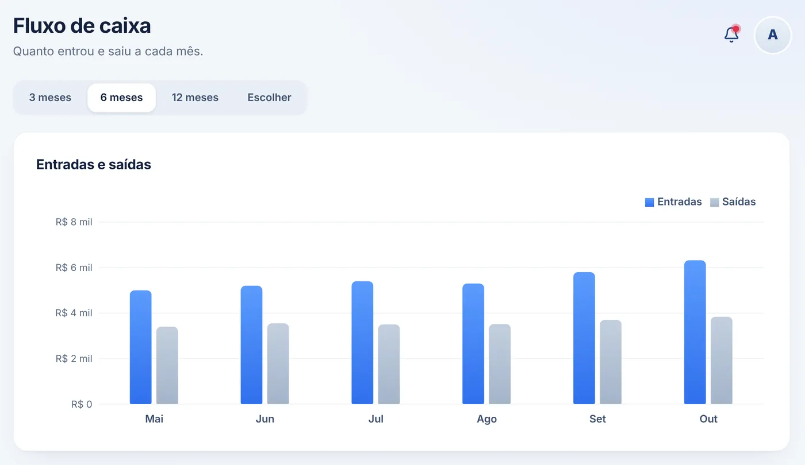

Dinheiro da casa misturado com o da empresa
O mercado de casa sai do caixa da loja e ninguém sabe mais o que é de quem.
Separe o que é seu do que é do negócio, com o pró-labore anotado à parte.
O Gynfinance organiza o dinheiro do seu negócio: o que entrou, o que saiu, as contas para pagar e receber e o limite do MEI. Você anota, ele faz as contas.
A demonstração abre na hora, sem cadastro.


Quem toca um pequeno negócio conhece bem esses problemas. O Gynfinance foi feito para resolver cada um deles, sem você precisar entender de contabilidade.
O mercado de casa sai do caixa da loja e ninguém sabe mais o que é de quem.
Separe o que é seu do que é do negócio, com o pró-labore anotado à parte.
Vendeu bem, mas no fim do mês a conta não fecha e fica a dúvida: o negócio dá lucro?
Veja na primeira tela quanto entrou, quanto saiu e quanto sobrou.
O boleto venceu, o cliente não pagou e você só lembrou depois.
Contas a pagar e a receber com aviso de vencimento e cobrança pelo WhatsApp.
Sem acompanhar o faturamento, dá para estourar o limite anual ou atrasar o DAS.
Acompanhe o limite do ano e cada DAS, com aviso antes de vencer.
Nada de planilha complicada nem termo de contador. Cada tela responde a uma pergunta sobre o seu dinheiro.
Escolha se entrou ou saiu, digite o valor e a categoria. Pronto. O resto o Gynfinance calcula sozinho.
No fechamento do mês você vê o resultado do negócio sem confundir com o seu salário. E recebe uma sugestão de quanto guardar de reserva.

As contas aparecem separadas por atrasadas, desta semana e mais para frente. Para o cliente que está devendo, a cobrança sai pronta pelo WhatsApp.

O Gynfinance soma o que você faturou no ano e mostra quanto ainda pode faturar. Se o ritmo das vendas passar do limite, você fica sabendo antes.
Compare as entradas e as saídas dos últimos meses e descubra para onde está indo o dinheiro. Quando o contador pedir, é só exportar.

Feito para o dia a dia de quem vende, presta serviço ou fabrica o que vende.
Entradas e saídas anotadas com poucos toques, no celular ou no computador.
O pró-labore fica separado do resultado do negócio.
O número mais importante, logo na primeira tela.
Aviso de vencimento e cobrança do cliente pelo WhatsApp.
Aluguel, internet e outras contas que se repetem todo mês.
Alerta antes de chegar no limite anual e antes do DAS vencer.
Resumo do mês que terminou, com sugestão de reserva.
Entradas, saídas e categorias, mês a mês.
Exporte os lançamentos do mês em CSV.
Abre no navegador. Não precisa instalar nada.
Conexão protegida e cada empresa só vê os próprios dados.
Responda poucas perguntas e o painel já fica montado.
Sem instalar nada e sem precisar chamar ninguém para configurar.
Veja o sistema funcionando com os dados de exemplo da Doces da Ana. Pode mexer à vontade: nada fica salvo.
Abrir a demonstraçãoSó o seu nome, e-mail e uma senha. Os dados do seu negócio ficam guardados e separados dos de outras empresas.
Criar minha contaConte o que o seu negócio faz, se é MEI e quanto tem em caixa hoje. O Gynfinance monta o painel para você.
É o mesmo Gynfinance em qualquer tela. Anote a venda na hora, pelo celular, e veja os relatórios com calma no computador.
Assinatura mensal, sem planos complicados para comparar.
Plano Gynfinance
a partir deR$ 25/mês
Para MEI e pequenas empresas que querem saber, todo mês, quanto entrou, quanto saiu e quanto sobrou.
Começar agoraPrefere ver antes? Testar a demonstração
Ficou com alguma dúvida? A gente responde.
Fale com a gente pelo WhatsAppNão. O Gynfinance abre no navegador, no celular ou no computador. É só entrar com o seu e-mail e senha.
Sim. A sua senha é guardada cifrada, a conexão com o site é protegida (HTTPS) e cada empresa só vê os próprios dados.
Serve. Pequenas empresas também usam o Gynfinance para controlar entradas, saídas, contas e o fechamento do mês. As telas do limite e do DAS são as únicas pensadas só para o MEI.
Ainda não, a emissão de nota chega em breve. Hoje cada venda tem o campo "nota emitida" e um atalho para o portal oficial da nota (NFS-e), e o fechamento do mês avisa quantas vendas ficaram sem nota.
Clique em "Testar a demonstração". O sistema abre na hora com os dados de exemplo da Doces da Ana, sem cadastro. O que você mexer na demonstração não fica salvo.
Sim. Na tela de lançamentos você exporta os lançamentos do mês em CSV, um arquivo que abre no Excel ou em qualquer planilha.
Teste agora com dados de exemplo ou crie sua conta e configure o seu negócio em 2 minutos.